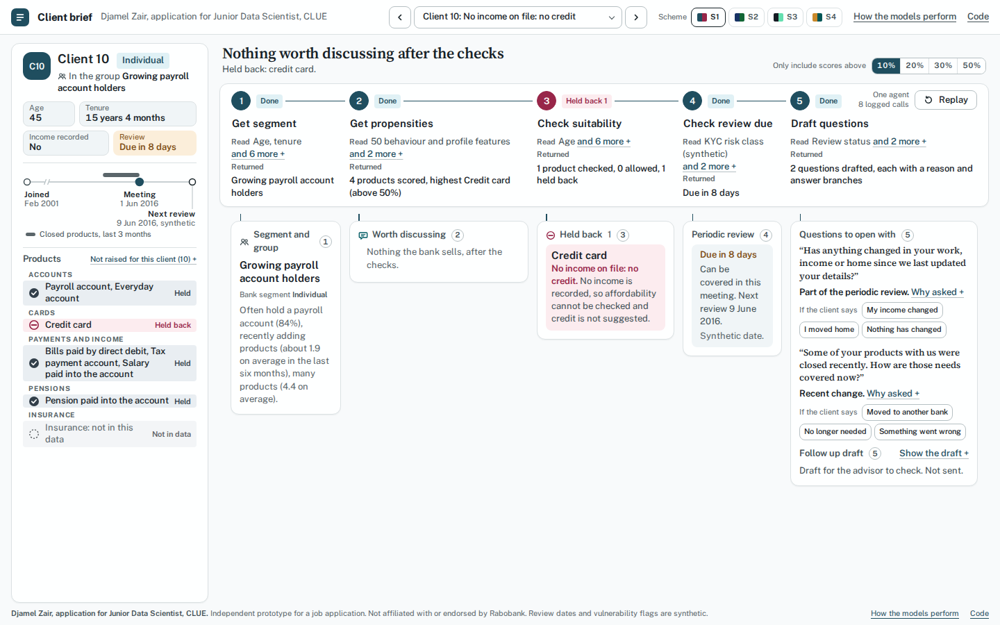
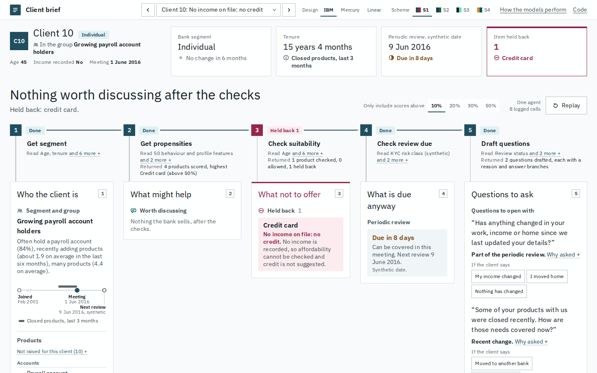
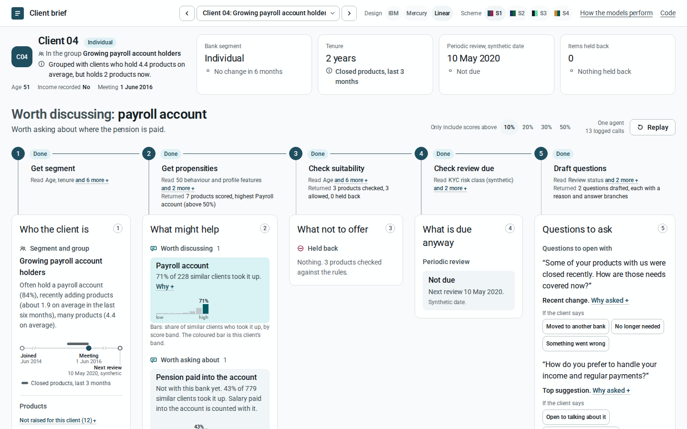
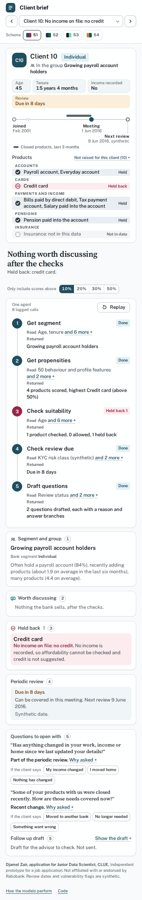
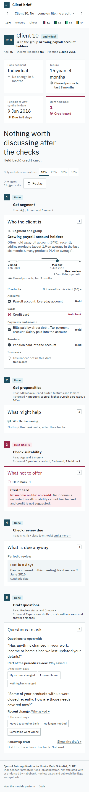
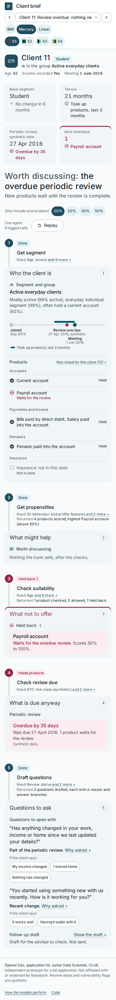
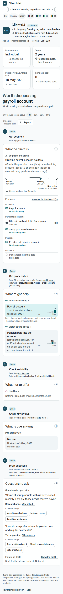
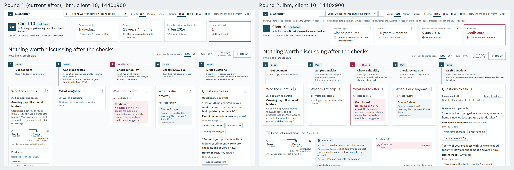
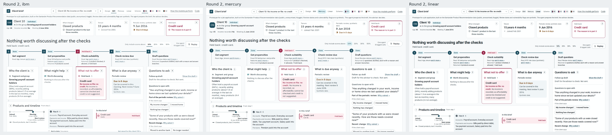

One improved layout with a design system layer on top: ?ds=ibm (the default), ?ds=mercury or ?ds=linear, each with any of the four schemes. The page still answers one question: what should the advisor know before the client walks in.
Before and after, client 10 (credit card held back)

Before. Profile column on the left, five narrow columns, held back is a small card in column 3.

After, ds=ibm, S1. Summary strip with the held back count, the headline, then each part directly under its step.
The three layers on the same client (S1, 1440 by 900)
Mercury: Inter at light weights, tonal cards without borders, pill buttons.

Linear: Roboto, surface ladder with hairlines, 12px cards, pill tabs.
Phone, 390 wide

Before: the pipeline stacks first, the brief follows, the link is lost.

After, ibm: summary first, then each step with its part under it.

After, mercury, client 11.

After, linear, client 04.
The critique, and what answers it
No summary; the gist is spread over chips and steps
A summary strip: identity with age, income, meeting date and care, then four stat cards (segment, tenure, review, held back), each with a value, a label and a status word with its glyph.
The left column competes with the stage
The column is gone. The wallet moved into step 1's part, as a plain list with hairlines instead of tinted rows.
What not to offer is easy to miss
A held back card in the summary names the products, the part gets a cherry top rule and a cherry title. With nothing held back both stay quiet: a grey "Nothing held back".
Five equal columns
Lane widths follow content (1.1, 1.25, 1.05, 1, 1.3), and parts end where their content ends instead of stretching.
Repeated text
Steps 1 and 4 drop their Returned line: the part right under them says the same words. Steps 2, 3 and 5 keep it because it adds counts.
The step to brief link is thin, lost on a phone
Each part sits directly under its step with a stem from the marker; a rail joins the markers; hover or focus in a lane lights marker, stem and part; a click still pins it. On a phone each part stays under its step.
A step feeds more than one part without saying so
Each part heading carries the numbered marker of its step; the summary cards carry theirs (click selects the step and lights everything it made).
The same tinted card everywhere; weak type contrast; tracked capitals
One card per part; inside it, type and space carry the hierarchy. Each layer brings its own type scale. Every label is sentence case.
Per design system: adopted, rejected and why
IBM (Carbon)
IBM Plex Sans 400 and 600, one family for everything
Type: caption 12/1.33/0.32px, body-sm 14/1.29/0.16px, body 16/1.5/0.16px, subhead 20, card-title 24, headline 32 at weight 400
Spacing 4, 8, 12, 16, 24, 32, 48
Radius 0 on cards, buttons and inputs; 2px on small badges; square step markers
Depth: 1px hairline, surface change on hover, no shadow
Tabs: selected gets ink, 600 and a 2px accent underline
Top nav 48; button padding 12 16; compact controls at the utility bar's 32; touch 48; 2px focus outline
Sentence case labels
IBM Blue and the greys: the palette is the user's
Charcoal footer inversion: a colour decision
Weight 300 display: nothing here is 42px or larger
16 column grid and the 1584 max: the spine has five lanes
24 to 48px card padding: too wide for a 230px lane
Mercury
Inter, the substitute the file names (360 to 500)
Type: legal 12/1.4/0.24px, ui-sm 14 at 420, body 16/1.4, body-lg 18/1.35 at 360, lead 24, heading-2 28/1.2/0.42px at 480; never above 500
Depth is tonal: cards are a step of fill, no border, no shadow
Wallet rows as accordion rows: 10px with a 1px rule
Buttons 40 tall with 0 20 padding; small buttons 32 with 0 16; one solid pill per group
Night nav and footer, lavender cards, indigo: palette
Uppercase eyebrows: the user asked for sentence case
Centred headlines: left aligned scans faster in a brief
80 to 128px section spacing and 32px card padding: would push every part under the fold
72px nav: the header must stay slim
Linear
Roboto: the first face in Linear's own fallback list that Google Fonts serves
Type: caption 12/1.4, body-sm 14/1.5, body 16/1.5/-0.05px, subhead 20/1.4/-0.2px, card-title 22, headline 28/1.2/-0.6px at 600; buttons 500
Spacing 4, 8, 12, 16, 24, 32, 48
Radius: chips 4, buttons 8, cards 12, status pills full
Depth: surface ladder plus hairline; hover lifts to surface-2 with the stronger hairline
Pricing tabs: canvas with ink-subtle, selected lifts to surface-2
Top nav 56; button padding 8 14; status badge 2 8
Dark only canvas: the user's four schemes stay, the ladder runs on whichever is active (noted conflict)
Lavender accent: palette
Focus ring at 50% opacity: it would fall under 3:1, kept solid
Display tracking of -1 to -3px: nothing here is above 28px
Product screenshots as protagonist, Linear Mono: not applicable
Fallbacks (marked "not specified" in tokens.css)
IBM
Badge padding: 2px 8px
Wallet row padding: 4px (the xxs step)
Card padding 16 is the resource tile's, used for every part
Mercury
A 4px step: not in its scale, 4px kept for hairline gaps
Line height for 14px running text: 1.4 (ui-sm is set at 1 for one line labels)
Badge padding: 2px 8px
Header: 56 instead of the 72 nav
Tabs: not specified; selected is the solid primary pill, the rest the 10% tint
Focus ring: 2px
Card padding: the toast's 12 16 instead of 32
Linear
Font: Roboto, not the Inter its note suggests, because the rule was the first free fallback in its list
Compact control height: 32
Wallet row padding: 4px instead of the changelog's 24
Card padding: 16 instead of 24
The white top edge highlight on lifted panels has no value in the file: not adopted
For all three: Google Fonts css2 has no version parameter, so each URL pins the exact family and weight axis. Code text stays on the system mono stack. Chart labels inside the small SVGs keep their 10 and 11px sizes, which no file covers.
The six hard rules
1. The agent prepares, the advisor decides
Met. No layout element is an action to sell: the only buttons are replay, the bar, the answers, the toggles and copy. The headline keeps "Worth discussing" and "Worth asking about"; the summary speaks of held back items and reviews.
2. Synthetic fields stay labelled
Met. The review card label reads "Periodic review, synthetic date"; the review part ends with "Synthetic date."; the timeline says "synthetic"; the footer says review dates and vulnerability flags are synthetic.
3. No raw probability
Met. The ranked component is not mounted. The summary shows counts, dates and words only; scores appear as bands ("Scores 50% to 100%") and take up rates, as before.
4. Held back stays visible and explained
Met. Named in the summary card and in the headline sub line, listed with rule and reason in part 3, marked in the wallet with glyph and word; nothing is collapsed.
5. Every number from data.json
Met. The HTML holds only words and mounts. Counts, dates, tenure and step numbers come from the components reading data.json once through field.js.
6. The step to part link gets clearer
Met. Part under step on every width, a stem and a rail, hover and focus light the pair, the part heading carries the step marker, replay fades each part until its step is done.
Round 2: what changed, and which report asked for it

Round 1 and round 2, ibm, client 10.

Round 2 in ibm, mercury and linear.
Layout (critique, user research)
Products and the timeline left part 1 for their own row under parts 1 to 4, tagged as from step 1 with a short stem up into part 1; parts 1 to 4 now share one height, so no lane leaves a hole
Spine columns 1, 0.95, 0.95, 1.05, 1.65: no answer group stacks one per row and no part title wraps at 1440
The follow up line sits at the top of part 5; the band chart moved behind each item's Why
The part number sits left of the title, on the stem's side
Wording and the summary (user research, critique)
Step 2 returns the count only ("4 products scored")
A held back item shows no score on its face; the band is behind Why, said to be the model's
"Nothing to discuss after the checks."; the question kind "Top suggestion" reads "Highest after the checks"
The user's decision: a product the client owns is "Has it" (mapped in variants.js; data.json still says "Held"). Owned products sit in one group; held back rows are tinted and ruled apart
The summary drops the repeated segment and adds "What changed"; every card carries a focusable step tag; a calm glyph when nothing is held back
One context line under the header; the data source is read from data.json
Design system (design_system.md)
Group A: skeleton bars on a hairline token (the Mercury skeleton shows again), one held back rule for all layers, a single lit ring, swatches painted from each scheme's tokens, contrast.py now scans variants.js
Group C: five role sizes (caption, body-sm, body, title, headline) plus a phone headline; no 10 or 11px literals; line height tokens; Mercury titles 480, Linear titles 500
Group D (cheap part): a 2px step, size, border and motion tokens; the js reads easing and durations from tokens.css
Mercury: white cards with a 1px rule and tinted items; selected tabs take the soft tint instead of the solid pill
ibm borrows linear's zero tracking on 12 and 14px text, flagged as a deviation
Groups B (colour tidy) and E (renames, dead code) are left for later: safe but wide
Phone: summary first, each step above its part, products folded behind one button that counts what is inside; "What not to offer" starts about 300px higher.
Checks
Round 1: contrast.py 468 pairs over 4 schemes and 3 layers, 0 failing, no raw colours outside the scheme blocks (see contrast.txt). For each layer in S1 and all 40 clients: every mount renders real data, nothing clipped at 1440 by 900, 1280 by 800 and 390, no horizontal scroll at 390, no console errors; the bar, an answer, a step link and a replay rerender only the mounts that depend on them.
Round 2: contrast.py 540 pairs, 0 failing, now also scanning variants.js. 135 tests pass. Every layer in S1, all 40 clients: every mount renders, nothing clipped at 1280 by 800, no horizontal scroll at 390, no console errors, interaction checks pass.